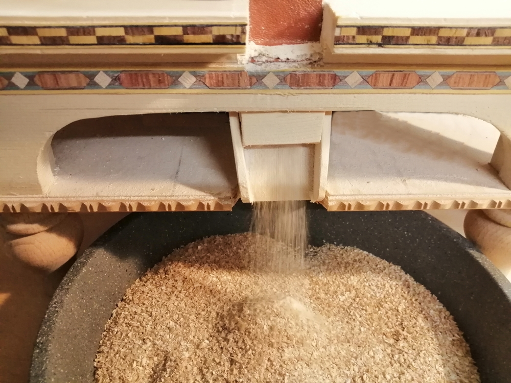
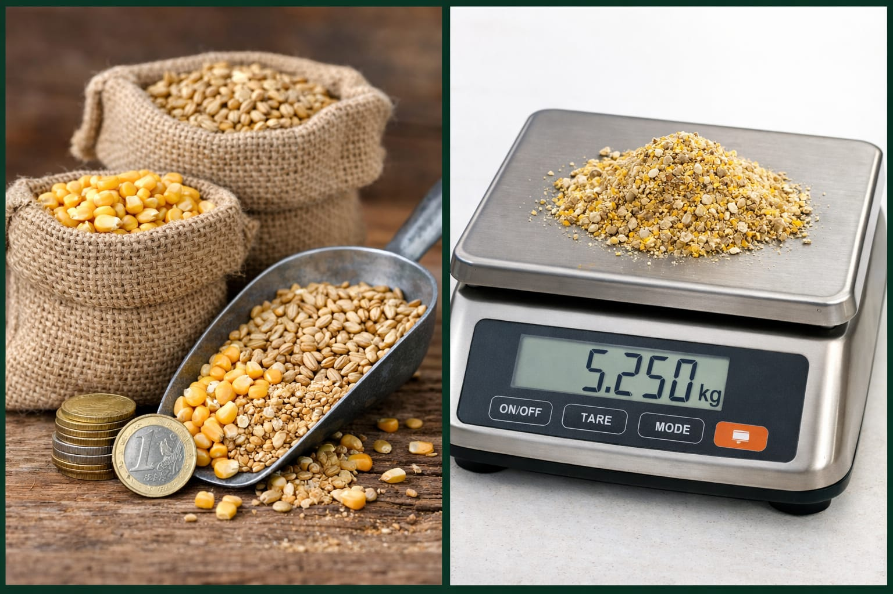
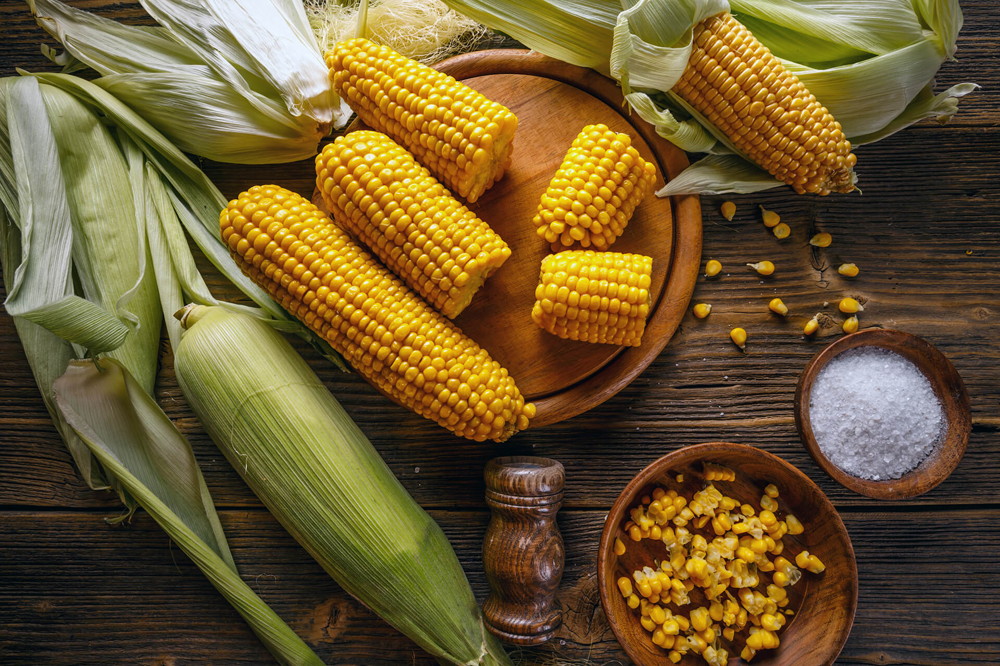
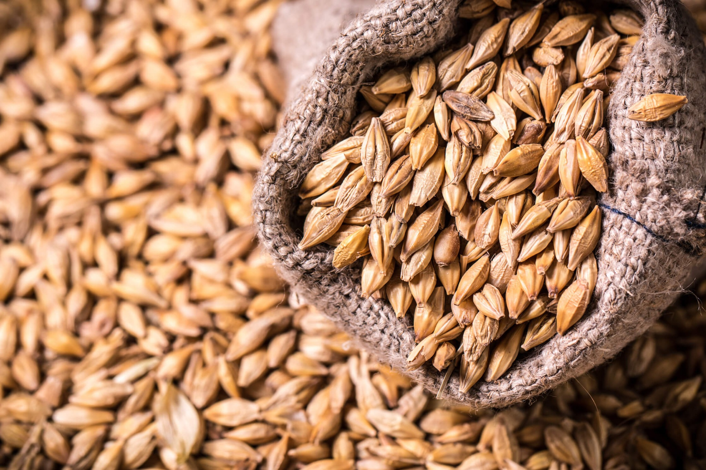
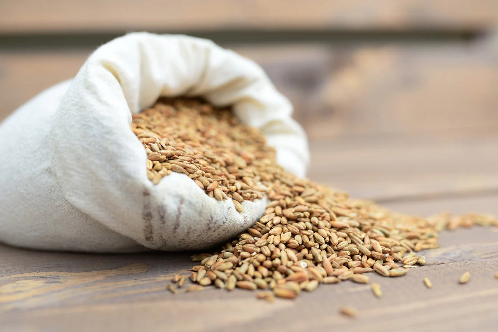
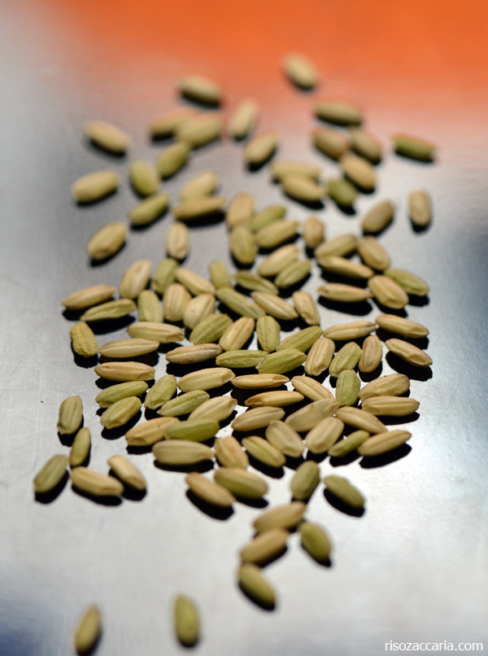

⚙️
Tritatura professionale
Lavorazione uniforme e regolabile secondo la specie animale e la razione.
Prepariamo cereali e miscele con granulometria grossa, media o fine, in base agli animali e alle esigenze del tuo allevamento.
Dal cereale alla consegna finale, ogni fase viene organizzata in modo chiaro prima della conferma.

Lavorazione uniforme e regolabile secondo la specie animale e la razione.

Composizioni dedicate in base a quantità, animali e obiettivo alimentare.
Costo definito in anticipo in base alla distanza reale, senza sorprese.
L’avena non è disponibile al momento. Per mix particolari viene sempre confermata prima la disponibilità.

Base energetica versatile per numerose razioni.

Cereale equilibrato adatto a diverse specie.

Fonte energetica con tritatura uniforme.

Chicco verde di riso, disponibile su richiesta.
Miscela definita insieme in base alle esigenze.
Seleziona animale, obiettivo e numero di capi. Il configuratore propone una composizione indicativa, stima il consumo e prepara la richiesta su WhatsApp.
Il risultato è una prima indicazione commerciale. Prima della preparazione verifichiamo insieme età, razza, stagione, disponibilità delle materie prime e alimentazione già utilizzata.
Scegli un animale e un obiettivo per visualizzare il mix.
—
—
Le composizioni e i consumi sono indicativi. Non sostituiscono una razione formulata da un tecnico, soprattutto in presenza di animali giovani, problemi sanitari o produzioni intensive. Acqua fresca sempre disponibile.
Il prezzo definitivo viene confermato nel preventivo in base a disponibilità, quantità e composizione del mix.
| Prodotto | 1–99 kg | Da 100 kg |
|---|---|---|
| Mais tritato | 0,69 €/kg | 0,63 €/kg |
| Orzo tritato | 0,69 €/kg | 0,63 €/kg |
| Frumento tritato | 0,71 €/kg | 0,65 €/kg |
| Grana verde tritata | 0,72 €/kg | 0,66 €/kg |
| Mix personalizzato | da 0,75 €/kg | da 0,69 €/kg |
I prezzi sono indicativi e possono variare in base alle materie prime e alla composizione richiesta. Il totale viene sempre comunicato prima della conferma.
Le distanze si intendono di sola andata dalla sede di AgroTritura. Il costo include andata e ritorno, carburante, tempo e usura del mezzo.
La stima non costituisce conferma d’ordine. Verificheremo insieme disponibilità, indirizzo e dettagli finali.